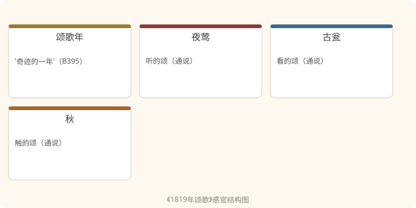

1819年颂歌
一、基本信息
| 作者 | 约翰·济慈 |
|---|---|
| 成书/出版 | 1819年（Britannica B395：六颂歌——'On a Grecian Urn'/'To a Nightingale'/'To Autumn'等——'all his greatest poetry came that single year'） John Keats — Encyclopaedia Britannica（百科全书） |
| 国别/地区 | 英国 |
| 时代 | 近代 · 19世纪10年代末 |
| 体裁 | 颂歌组 |
| 语言 | 英语 |

《1819年颂歌》感官结构图（主题·结构图）
二、创作背景
Britannica（B395）：1819颂歌——'On Indolence'/'On a Grecian Urn'/'To Psyche'/'To a Nightingale'/'On Melancholy'/'To Autumn'——'all his greatest poetry came that single year'。
Britannica（B395）：济慈——'died of tuberculosis in Rome in 1821 at the age of 25'。
题材（通说待核）：夜莺的古瓶与'秋'——感官的'颂'体。
三、内容脉络
（通说待核）六颂的'感官'序列：听（夜莺）—看（古瓶）—触（秋）。
（通说待核）'负性能力'说（negative capability——B395正文未载，不采）。
四、主要人物表
| 人物 | 身份 | 说明 |
|---|---|---|
| 抒情'我' | 颂者 | （B395 语境） |
五、主题与艺术特点
- '所有最伟大的诗都出自这一年'（B395）。
- 颂歌体的感官化（通说待核）。
- '人类心灵的痛苦与挣扎'（B395 转述：the agony and strife of human hearts）。
六、影响与评论
- Britannica：'all his greatest poetry came that single year'（B395）。
John Keats — Encyclopaedia Britannica（百科全书） - Britannica：六颂歌清单（B395）。
John Keats — Encyclopaedia Britannica（百科全书）
七、阅读建议
难点
- 颂歌体（ode stanza）。
- 1819年的传记语境（弟弟之死说——通说待核）。
- 《1819年颂歌》中译名（《济慈颂歌》）待核。
- 英文原版（公有领域）。
济慈首选；与《恩底弥翁》对读。
八、待核实
- 六颂歌清单核对（B395已载六题）。
- '负性能力'术语——B395正文未载（不采）。
- 《希腊古瓮颂》细节待核（通说）。